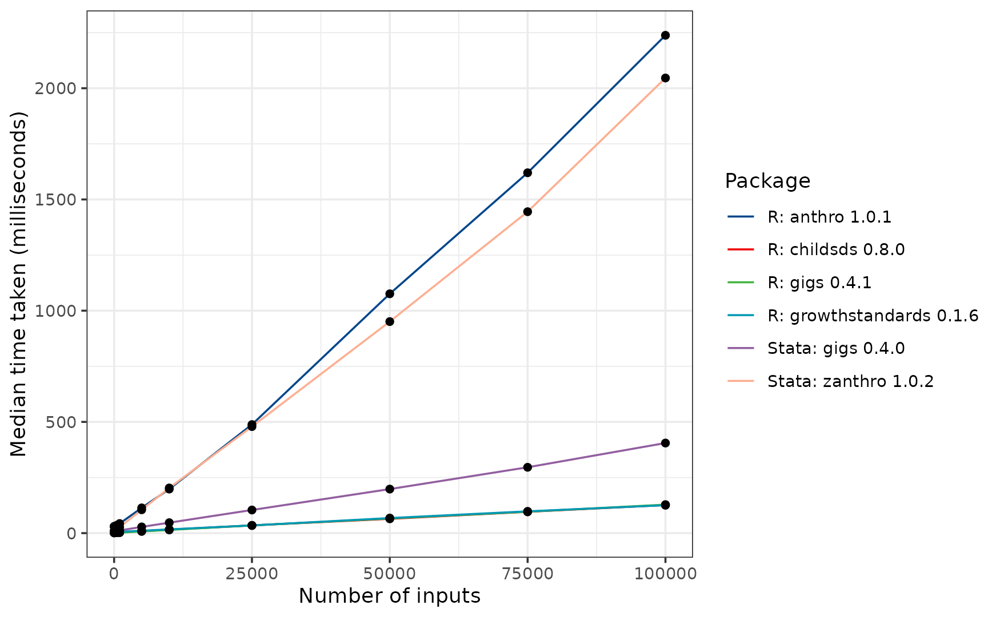

Benchmarking gigs against other software packages
Source:vignettes/articles/benchmarking.Rmd
benchmarking.RmdRationale
This short article describes the performance of gigs relative to a non-exhaustive group of R and non-R packages designed to implement child growth standards.
| Package name | Language | On CRAN? |
|---|---|---|
| anthro | R | Yes |
| childsds | R | Yes |
| gigs | R | No |
| ki-tools/growthstandards | R | No |
| gigs | Stata | No |
| zanthro | Stata | No |
Thus far, there is no comprehensive benchmark comparing these different packages. This short article will compare the speed of each package from 1 to 100000 inputs, checking how fast each package can convert weight values to z-scores in the WHO Child Growth standards.
We have performed these benchmarks on a Windows 10 system running a Ryzen 7 3700X processor and 16GB of DDR4 RAM. The Stata benchmarks have been run on the same system in Stata 18.0, using the benchmark package for Stata.
Set up benchmark dataset
The benchmarking and package comparisons will all use the same
100,000-row dataset comprised of data which can be used to convert
between z-scores and centiles in the WHO weight-for-age standard. The
z-scores, x variable and sexes for each row are generated
randomly with a pre-specified seed. As gigs is validated against the
published growth curve data from the WHO, we use it to generate weight
values in kg for each observation. This dataset can then be used to
compare speed and accuracy in conversion between values and
z-scores/centiles for the packages mentioned above.
who_gs_dataset <- function(n, acronym = "wfa", seed = 154237890) {
withr::with_seed(
seed,
code = {
# Random z-scores around 0
z <- rnorm(n = n)
# X variables are non-discrete but within bounds of the desired acronym
xvars <- gigs::who_gs_coeffs[[acronym]][[1]][, 1]
x <- sample(xvars, size = n, replace = TRUE)
x_jitter <- c(runif(n = 5, min = -1, max = 1), 0)
x <- x + sample(x_jitter, size = n, replace = TRUE)
x <- pmax(pmin(x, max(xvars)), min(xvars))
# Sexes randomly sampled from male and female
sex <- sample(c("M", "F"), size = n, replace = TRUE)
}
)
acronym <- rep_len(acronym, n)
out <- data.frame(z = z, x = x, sex = sex, acronym = acronym) |>
dplyr::mutate(
y = gigs::who_gs_zscore2value(z = z, x = x, sex = sex, acronym = acronym)
)
purrr::set_names(out, c("z", "x", "sex", "acronym", "y"))
}
# Generate 100,000-row dataset
bench_dataset <- who_gs_dataset(n = 100000)The first 10 rows of this dataset look like this:
bench_dataset[1:10, ]| z | x | sex | acronym | y |
|---|---|---|---|---|
| 0.1783916 | 1480.29104 | F | wfa | 16.593835 |
| 1.0806829 | 758.04165 | F | wfa | 13.377723 |
| -0.7026929 | 1076.37115 | F | wfa | 12.558484 |
| 0.0950173 | 1425.04165 | M | wfa | 16.348601 |
| -0.4482927 | 368.91555 | F | wfa | 8.497343 |
| -0.3574745 | 792.04165 | M | wfa | 12.043674 |
| 1.1661293 | 1358.10063 | F | wfa | 18.188497 |
| -0.0874651 | 54.29104 | M | wfa | 5.300828 |
| -0.4768519 | 1176.10063 | F | wfa | 13.485699 |
| 0.8001542 | 784.29104 | M | wfa | 13.710762 |
Benchmark code
The mbench_pkg() function is used to benchmark each
package over a range of input sizes. Each call to it produces a tabular
output containing the lower quartile, median and upper quartile timings
for pkg_expr to operate on the data, ranging from 1 to
100,000 inputs.
mbench_pkg <- function(pkg_expr, pkg_name) {
n_inputs <- c(1, 10, 100, 500, 1000, 5000, 10000, 25000, 50000, 75000, 100000)
purrr::map_dfr(.x = n_inputs,
.f = \(no_of_inputs) {
dataset <- bench_dataset[seq_len(no_of_inputs), ]
mbench <- microbenchmark::microbenchmark(
dplyr::mutate(dataset, test = eval(pkg_expr)),
times = 25
)
c(n_inputs = no_of_inputs,
median_time = summary(mbench)$median,
time_units = attr(summary(mbench), which = "unit"))
}) |>
dplyr::mutate(n_inputs = as.integer(n_inputs),
median_time = as.numeric(median_time),
package = pkg_name)
}
anthro
anthro_timings <- mbench_pkg(
pkg_expr = quote(anthro::anthro_zscores(sex = sex,
age = x,
weight = y)$zwei),
pkg_name = paste("R: anthro", packageVersion(pkg = "anthro"))
)
childsds
childsds_timings <- mbench_pkg(
pkg_expr = quote(childsds::sds(value = y,
age = x / 365.25,
sex = sex,
male = "M",
female = "F",
item = "weight",
ref = childsds::who.ref)),
pkg_name = paste("R: childsds", packageVersion(pkg = "childsds"))
)
growthstandards
growthstandards_timings <- mbench_pkg(
pkg_expr = quote(
growthstandards::who_value2zscore(y = y, x = x,
sex = ifelse(sex == "M", "Male",
"Female"),
y_var = "wtkg")
),
pkg_name = paste("R: growthstandards",
packageVersion(pkg = "growthstandards"))
)
gigs
gigs_timings <- mbench_pkg(
pkg_expr = quote(gigs::who_gs_value2zscore(y = y, x = x, sex = sex,
acronym = acronym)),
pkg_name = paste("R: gigs", packageVersion(pkg = "gigs"))
)Stata
# Save .dta file equivalent of benchmarking table. This can be used to benchmark
# Stata packages.
haven::write_dta(data = bench_dataset,
path = file.path("exclude", "statabench", "bench_dataset.dta"))In Stata, the commands are run inside a do-file which utilises the benchmark
package for Stata. This script essentially does the same as
mbench_pkg(), but for the Stata gigs
package and the zanthro package.
// This is Stata code
foreach i in 1 10 100 500 1000 5000 10000 25000 50000 75000 100000 {
use "benchmarking/bench_dataset.dta", clear
qui drop if _n > `i'
di "Number of inputs: `i'"
bench, reps(25) restore last: ///
qui egen double z_gigs = who_gs(y, "wfa", "v2z"), ///
xvar(x) sex(sex) sexcode(m=M, f=F)
}
foreach i in 1 10 100 500 1000 5000 10000 25000 50000 75000 100000 {
use "benchmarking/bench_dataset.dta", clear
qui drop if _n > `i'
di "Number of inputs: `i'"
bench, reps(25) restore last: ///
qui egen z_anthro = zanthro(y, wa, WHO), xvar(x) gender(sex) ///
gencode(male=M, female=F) ageunit(day)
}The outputs from this script give a table of timings that look like this:
stata_timings## n_inputs median_time time_units package
## 1 1 0.039 seconds Stata: gigs 0.3.0
## 2 10 0.039 seconds Stata: gigs 0.3.0
## 3 100 0.040 seconds Stata: gigs 0.3.0
## 4 500 0.041 seconds Stata: gigs 0.3.0
## 5 1000 0.042 seconds Stata: gigs 0.3.0
## 6 5000 0.057 seconds Stata: gigs 0.3.0
## 7 10000 0.076 seconds Stata: gigs 0.3.0
## 8 25000 0.134 seconds Stata: gigs 0.3.0
## 9 50000 0.230 seconds Stata: gigs 0.3.0
## 10 75000 0.332 seconds Stata: gigs 0.3.0
## 11 100000 0.440 seconds Stata: gigs 0.3.0
## 12 1 0.007 seconds Stata: zbmicat 1.0.2
## 13 10 0.008 seconds Stata: zbmicat 1.0.2
## 14 100 0.009 seconds Stata: zbmicat 1.0.2
## 15 500 0.017 seconds Stata: zbmicat 1.0.2
## 16 1000 0.027 seconds Stata: zbmicat 1.0.2
## 17 5000 0.105 seconds Stata: zbmicat 1.0.2
## 18 10000 0.203 seconds Stata: zbmicat 1.0.2
## 19 25000 0.479 seconds Stata: zbmicat 1.0.2
## 20 50000 0.951 seconds Stata: zbmicat 1.0.2
## 21 75000 1.445 seconds Stata: zbmicat 1.0.2
## 22 100000 2.046 seconds Stata: zbmicat 1.0.2Plotting
Only by plotting the various timings tables can we see the trends for each package:

On the whole, anthro is by far the slowest R package,
taking around 2.56 seconds to run over 100,000 inputs. This is in part
because anthro computes results in every WHO Child Growth
standard each time anthro is called, but also due to a slower
implementation than the other packages.
Next slowest is the Stata package zanthro, which takes
2.05 seconds to compute results in just one WHO standard. About 4 times
faster than zanthro is gigs for Stata, which
scales more efficiently than zanthro and so takes 0.44
seconds to convert 100,000 measurements to z-scores.
Leading the pack are three R implementations:
growthstandards, gigs, and
childsds. The childsds package is fastest at ~
145 ms for 100,000 inputs, followed by growthstandards (166
ms) and gigs (168 ms).
Package output similarity
The packages also differ slightly in how they convert between
different values, which can affect the z-scores computed by each
package, even if inputs are the same. In our testing, we found that the
tested packages mostly agreed with each other, but that
childsds did not correctly perform z-scoring the WHO
standards.
This is because the WHO Child Growth standards constrain z-scores in
the outer tails to within the z-scores where more data was available,
i.e. between -3 and +3 SD. More information on this can be found in the
reports referenced in the gigs::who_gs_value2zscore()
documentation.
discrepancies <- data.frame(z = c(-3.03, -2.97, 2.97, 3.03),
age_days = 0,
sex = "M") |>
dplyr::mutate(
weight_kg = gigs::who_gs_wfa_zscore2value(z, age_days, sex),
# GIGS z-score
z_gigs = gigs::who_gs_wfa_value2zscore(weight_kg, age_days, sex),
z_growthstandards = growthstandards::who_wtkg2zscore(
age_days, weight_kg, "Male"
),
z_childsds = childsds::sds(
value = weight_kg, age = age_days / 365.25,
sex = sex, male = "M", female = "F",
item = "weight", ref = childsds::who.ref
)
)When we look at these z-scores, you can see that both
growthstandards and gigs correctly apply the
constraining procedure; childsds does not.
| z | age_days | sex | weight_kg | z_gigs | z_growthstandards | z_childsds |
|---|---|---|---|---|---|---|
| -3.03 | 0 | M | 2.068938 | -3.03 | -3.03 | -3.031770 |
| -2.97 | 0 | M | 2.091082 | -2.97 | -2.97 | -2.970000 |
| 2.97 | 0 | M | 5.011546 | 2.97 | 2.97 | 2.970000 |
| 3.03 | 0 | M | 5.048978 | 3.03 | 3.03 | 3.028744 |
Session information
## R version 4.3.2 (2023-10-31 ucrt)
## Platform: x86_64-w64-mingw32/x64 (64-bit)
## Running under: Windows 8 x64 (build 9200)
##
## Matrix products: default
##
##
## locale:
## [1] LC_COLLATE=English_United Kingdom.1252
## [2] LC_CTYPE=English_United Kingdom.1252
## [3] LC_MONETARY=English_United Kingdom.1252
## [4] LC_NUMERIC=C
## [5] LC_TIME=English_United Kingdom.1252
##
## time zone: Europe/London
## tzcode source: internal
##
## attached base packages:
## [1] stats graphics grDevices utils datasets methods base
##
## other attached packages:
## [1] testthat_3.2.0 rmarkdown_2.25 knitr_1.45 vctrs_0.6.4
## [5] gamlss.dist_6.1-1
##
## loaded via a namespace (and not attached):
## [1] DBI_1.1.3 childsds_0.8.0 remotes_2.4.2.1
## [4] rematch2_2.1.2 rlang_1.1.2 magrittr_2.0.3
## [7] compiler_4.3.2 roxygen2_7.2.3 callr_3.7.3
## [10] maps_3.4.1.1 stringr_1.5.1 profvis_0.3.8
## [13] httpcode_0.3.0 pkgconfig_2.0.3 crayon_1.5.2
## [16] fastmap_1.1.1 ellipsis_0.3.2 utf8_1.2.4
## [19] promises_1.2.1 sessioninfo_1.2.2 haven_2.5.3
## [22] ps_1.7.5 purrr_1.0.2 waldo_0.5.2
## [25] xfun_0.41 cachem_1.0.8 covr_3.6.4
## [28] jsonlite_1.8.7 growthstandards_0.1.5 gistr_0.9.0
## [31] later_1.3.1 pryr_0.1.6 prettyunits_1.2.0
## [34] R6_2.5.1 bslib_0.5.1 stringi_1.8.1
## [37] pkgload_1.3.3 brio_1.1.3 jquerylib_0.1.4
## [40] Rcpp_1.0.11 assertthat_0.2.1 usethis_2.2.2
## [43] Matrix_1.6-3 splines_4.3.2 httpuv_1.6.12
## [46] tidyselect_1.2.0 rstudioapi_0.15.0 yaml_2.3.7
## [49] codetools_0.2-19 miniUI_0.1.1.1 curl_5.1.0
## [52] processx_3.8.2 pkgbuild_1.4.2 lattice_0.21-9
## [55] tibble_3.2.1 shiny_1.7.5.1 withr_2.5.2
## [58] evaluate_0.23 survival_3.5-7 desc_1.4.2
## [61] survey_4.2-1 urlchecker_1.0.1 xml2_1.3.5
## [64] pillar_1.9.0 anthro_1.0.1 whisker_0.4.1
## [67] DT_0.30 rex_1.2.1 generics_0.1.3
## [70] rprojroot_2.0.4 hms_1.1.3 ggplot2_3.4.4
## [73] munsell_0.5.0 scales_1.2.1 xtable_1.8-4
## [76] glue_1.6.2 lazyeval_0.2.2 tools_4.3.2
## [79] diffobj_0.3.5 hexbin_1.28.3 data.table_1.14.8
## [82] forcats_1.0.0 fs_1.6.3 grid_4.3.2
## [85] mitools_2.4 tidyr_1.3.0 rbokeh_0.5.2
## [88] crosstalk_1.2.0 devtools_2.4.5 colorspace_2.1-0
## [91] cli_3.6.1 gigs_0.3.0 fansi_1.0.5
## [94] dplyr_1.1.3 downlit_0.4.3 praise_1.0.0
## [97] gtable_0.3.4 sass_0.4.7 digest_0.6.33
## [100] crul_1.4.0 htmlwidgets_1.6.2 memoise_2.0.1
## [103] htmltools_0.5.7 pkgdown_2.0.7 lifecycle_1.0.4
## [106] httr_1.4.7 mime_0.12 microbenchmark_1.4.10
## [109] MASS_7.3-60